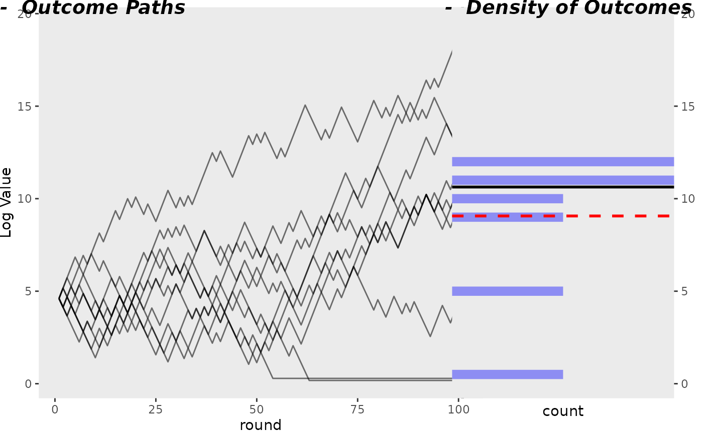

library(TailRiskAnalyzer)
library(ggplot2)
library(dplyr)
#>
#> Attaching package: 'dplyr'
#> The following objects are masked from 'package:stats':
#>
#> filter, lag
#> The following objects are masked from 'package:base':
#>
#> intersect, setdiff, setequal, union
# create empty dataframe with 2 columns, index, and value
df <- data.frame(
index = integer(),
round = integer(),
value = double()
)
num_lines <- 10
for (i in 1:num_lines) {
cur_run <- coin_toss_seq(100, min_bet = 1, betting_fraction = 0.75)
for (round in seq_along(cur_run$results)) {
value <- cur_run$results[round]
df <- df |> add_row(index = i, round = round, value = value)
}
}
get_kelly_bet(0.5, 0.5, 2)
#> [1] 0.75
# df |> ggplot(aes(round, value, color = index, group = index)) +
# geom_line(alpha = 0.8)
create_side_by_side_plot(df)
Theoretical Distribution, based on all possible outcomes
toss_result_list <- generate_coin_sequences(8)
toss_result_list
#> Var1 Var2 Var3 Var4 Var5 Var6 Var7 Var8
#> [1,] 0 0 0 0 0 0 0 0
#> [2,] 1 0 0 0 0 0 0 0
#> [3,] 0 1 0 0 0 0 0 0
#> [4,] 1 1 0 0 0 0 0 0
#> [5,] 0 0 1 0 0 0 0 0
#> [6,] 1 0 1 0 0 0 0 0
#> [7,] 0 1 1 0 0 0 0 0
#> [8,] 1 1 1 0 0 0 0 0
#> [9,] 0 0 0 1 0 0 0 0
#> [10,] 1 0 0 1 0 0 0 0
#> [11,] 0 1 0 1 0 0 0 0
#> [12,] 1 1 0 1 0 0 0 0
#> [13,] 0 0 1 1 0 0 0 0
#> [14,] 1 0 1 1 0 0 0 0
#> [15,] 0 1 1 1 0 0 0 0
#> [16,] 1 1 1 1 0 0 0 0
#> [17,] 0 0 0 0 1 0 0 0
#> [18,] 1 0 0 0 1 0 0 0
#> [19,] 0 1 0 0 1 0 0 0
#> [20,] 1 1 0 0 1 0 0 0
#> [21,] 0 0 1 0 1 0 0 0
#> [22,] 1 0 1 0 1 0 0 0
#> [23,] 0 1 1 0 1 0 0 0
#> [24,] 1 1 1 0 1 0 0 0
#> [25,] 0 0 0 1 1 0 0 0
#> [26,] 1 0 0 1 1 0 0 0
#> [27,] 0 1 0 1 1 0 0 0
#> [28,] 1 1 0 1 1 0 0 0
#> [29,] 0 0 1 1 1 0 0 0
#> [30,] 1 0 1 1 1 0 0 0
#> [31,] 0 1 1 1 1 0 0 0
#> [32,] 1 1 1 1 1 0 0 0
#> [33,] 0 0 0 0 0 1 0 0
#> [34,] 1 0 0 0 0 1 0 0
#> [35,] 0 1 0 0 0 1 0 0
#> [36,] 1 1 0 0 0 1 0 0
#> [37,] 0 0 1 0 0 1 0 0
#> [38,] 1 0 1 0 0 1 0 0
#> [39,] 0 1 1 0 0 1 0 0
#> [40,] 1 1 1 0 0 1 0 0
#> [41,] 0 0 0 1 0 1 0 0
#> [42,] 1 0 0 1 0 1 0 0
#> [43,] 0 1 0 1 0 1 0 0
#> [44,] 1 1 0 1 0 1 0 0
#> [45,] 0 0 1 1 0 1 0 0
#> [46,] 1 0 1 1 0 1 0 0
#> [47,] 0 1 1 1 0 1 0 0
#> [48,] 1 1 1 1 0 1 0 0
#> [49,] 0 0 0 0 1 1 0 0
#> [50,] 1 0 0 0 1 1 0 0
#> [51,] 0 1 0 0 1 1 0 0
#> [52,] 1 1 0 0 1 1 0 0
#> [53,] 0 0 1 0 1 1 0 0
#> [54,] 1 0 1 0 1 1 0 0
#> [55,] 0 1 1 0 1 1 0 0
#> [56,] 1 1 1 0 1 1 0 0
#> [57,] 0 0 0 1 1 1 0 0
#> [58,] 1 0 0 1 1 1 0 0
#> [59,] 0 1 0 1 1 1 0 0
#> [60,] 1 1 0 1 1 1 0 0
#> [61,] 0 0 1 1 1 1 0 0
#> [62,] 1 0 1 1 1 1 0 0
#> [63,] 0 1 1 1 1 1 0 0
#> [64,] 1 1 1 1 1 1 0 0
#> [65,] 0 0 0 0 0 0 1 0
#> [66,] 1 0 0 0 0 0 1 0
#> [67,] 0 1 0 0 0 0 1 0
#> [68,] 1 1 0 0 0 0 1 0
#> [69,] 0 0 1 0 0 0 1 0
#> [70,] 1 0 1 0 0 0 1 0
#> [71,] 0 1 1 0 0 0 1 0
#> [72,] 1 1 1 0 0 0 1 0
#> [73,] 0 0 0 1 0 0 1 0
#> [74,] 1 0 0 1 0 0 1 0
#> [75,] 0 1 0 1 0 0 1 0
#> [76,] 1 1 0 1 0 0 1 0
#> [77,] 0 0 1 1 0 0 1 0
#> [78,] 1 0 1 1 0 0 1 0
#> [79,] 0 1 1 1 0 0 1 0
#> [80,] 1 1 1 1 0 0 1 0
#> [81,] 0 0 0 0 1 0 1 0
#> [82,] 1 0 0 0 1 0 1 0
#> [83,] 0 1 0 0 1 0 1 0
#> [84,] 1 1 0 0 1 0 1 0
#> [85,] 0 0 1 0 1 0 1 0
#> [86,] 1 0 1 0 1 0 1 0
#> [87,] 0 1 1 0 1 0 1 0
#> [88,] 1 1 1 0 1 0 1 0
#> [89,] 0 0 0 1 1 0 1 0
#> [90,] 1 0 0 1 1 0 1 0
#> [91,] 0 1 0 1 1 0 1 0
#> [92,] 1 1 0 1 1 0 1 0
#> [93,] 0 0 1 1 1 0 1 0
#> [94,] 1 0 1 1 1 0 1 0
#> [95,] 0 1 1 1 1 0 1 0
#> [96,] 1 1 1 1 1 0 1 0
#> [97,] 0 0 0 0 0 1 1 0
#> [98,] 1 0 0 0 0 1 1 0
#> [99,] 0 1 0 0 0 1 1 0
#> [100,] 1 1 0 0 0 1 1 0
#> [101,] 0 0 1 0 0 1 1 0
#> [102,] 1 0 1 0 0 1 1 0
#> [103,] 0 1 1 0 0 1 1 0
#> [104,] 1 1 1 0 0 1 1 0
#> [105,] 0 0 0 1 0 1 1 0
#> [106,] 1 0 0 1 0 1 1 0
#> [107,] 0 1 0 1 0 1 1 0
#> [108,] 1 1 0 1 0 1 1 0
#> [109,] 0 0 1 1 0 1 1 0
#> [110,] 1 0 1 1 0 1 1 0
#> [111,] 0 1 1 1 0 1 1 0
#> [112,] 1 1 1 1 0 1 1 0
#> [113,] 0 0 0 0 1 1 1 0
#> [114,] 1 0 0 0 1 1 1 0
#> [115,] 0 1 0 0 1 1 1 0
#> [116,] 1 1 0 0 1 1 1 0
#> [117,] 0 0 1 0 1 1 1 0
#> [118,] 1 0 1 0 1 1 1 0
#> [119,] 0 1 1 0 1 1 1 0
#> [120,] 1 1 1 0 1 1 1 0
#> [121,] 0 0 0 1 1 1 1 0
#> [122,] 1 0 0 1 1 1 1 0
#> [123,] 0 1 0 1 1 1 1 0
#> [124,] 1 1 0 1 1 1 1 0
#> [125,] 0 0 1 1 1 1 1 0
#> [126,] 1 0 1 1 1 1 1 0
#> [127,] 0 1 1 1 1 1 1 0
#> [128,] 1 1 1 1 1 1 1 0
#> [129,] 0 0 0 0 0 0 0 1
#> [130,] 1 0 0 0 0 0 0 1
#> [131,] 0 1 0 0 0 0 0 1
#> [132,] 1 1 0 0 0 0 0 1
#> [133,] 0 0 1 0 0 0 0 1
#> [134,] 1 0 1 0 0 0 0 1
#> [135,] 0 1 1 0 0 0 0 1
#> [136,] 1 1 1 0 0 0 0 1
#> [137,] 0 0 0 1 0 0 0 1
#> [138,] 1 0 0 1 0 0 0 1
#> [139,] 0 1 0 1 0 0 0 1
#> [140,] 1 1 0 1 0 0 0 1
#> [141,] 0 0 1 1 0 0 0 1
#> [142,] 1 0 1 1 0 0 0 1
#> [143,] 0 1 1 1 0 0 0 1
#> [144,] 1 1 1 1 0 0 0 1
#> [145,] 0 0 0 0 1 0 0 1
#> [146,] 1 0 0 0 1 0 0 1
#> [147,] 0 1 0 0 1 0 0 1
#> [148,] 1 1 0 0 1 0 0 1
#> [149,] 0 0 1 0 1 0 0 1
#> [150,] 1 0 1 0 1 0 0 1
#> [151,] 0 1 1 0 1 0 0 1
#> [152,] 1 1 1 0 1 0 0 1
#> [153,] 0 0 0 1 1 0 0 1
#> [154,] 1 0 0 1 1 0 0 1
#> [155,] 0 1 0 1 1 0 0 1
#> [156,] 1 1 0 1 1 0 0 1
#> [157,] 0 0 1 1 1 0 0 1
#> [158,] 1 0 1 1 1 0 0 1
#> [159,] 0 1 1 1 1 0 0 1
#> [160,] 1 1 1 1 1 0 0 1
#> [161,] 0 0 0 0 0 1 0 1
#> [162,] 1 0 0 0 0 1 0 1
#> [163,] 0 1 0 0 0 1 0 1
#> [164,] 1 1 0 0 0 1 0 1
#> [165,] 0 0 1 0 0 1 0 1
#> [166,] 1 0 1 0 0 1 0 1
#> [167,] 0 1 1 0 0 1 0 1
#> [168,] 1 1 1 0 0 1 0 1
#> [169,] 0 0 0 1 0 1 0 1
#> [170,] 1 0 0 1 0 1 0 1
#> [171,] 0 1 0 1 0 1 0 1
#> [172,] 1 1 0 1 0 1 0 1
#> [173,] 0 0 1 1 0 1 0 1
#> [174,] 1 0 1 1 0 1 0 1
#> [175,] 0 1 1 1 0 1 0 1
#> [176,] 1 1 1 1 0 1 0 1
#> [177,] 0 0 0 0 1 1 0 1
#> [178,] 1 0 0 0 1 1 0 1
#> [179,] 0 1 0 0 1 1 0 1
#> [180,] 1 1 0 0 1 1 0 1
#> [181,] 0 0 1 0 1 1 0 1
#> [182,] 1 0 1 0 1 1 0 1
#> [183,] 0 1 1 0 1 1 0 1
#> [184,] 1 1 1 0 1 1 0 1
#> [185,] 0 0 0 1 1 1 0 1
#> [186,] 1 0 0 1 1 1 0 1
#> [187,] 0 1 0 1 1 1 0 1
#> [188,] 1 1 0 1 1 1 0 1
#> [189,] 0 0 1 1 1 1 0 1
#> [190,] 1 0 1 1 1 1 0 1
#> [191,] 0 1 1 1 1 1 0 1
#> [192,] 1 1 1 1 1 1 0 1
#> [193,] 0 0 0 0 0 0 1 1
#> [194,] 1 0 0 0 0 0 1 1
#> [195,] 0 1 0 0 0 0 1 1
#> [196,] 1 1 0 0 0 0 1 1
#> [197,] 0 0 1 0 0 0 1 1
#> [198,] 1 0 1 0 0 0 1 1
#> [199,] 0 1 1 0 0 0 1 1
#> [200,] 1 1 1 0 0 0 1 1
#> [201,] 0 0 0 1 0 0 1 1
#> [202,] 1 0 0 1 0 0 1 1
#> [203,] 0 1 0 1 0 0 1 1
#> [204,] 1 1 0 1 0 0 1 1
#> [205,] 0 0 1 1 0 0 1 1
#> [206,] 1 0 1 1 0 0 1 1
#> [207,] 0 1 1 1 0 0 1 1
#> [208,] 1 1 1 1 0 0 1 1
#> [209,] 0 0 0 0 1 0 1 1
#> [210,] 1 0 0 0 1 0 1 1
#> [211,] 0 1 0 0 1 0 1 1
#> [212,] 1 1 0 0 1 0 1 1
#> [213,] 0 0 1 0 1 0 1 1
#> [214,] 1 0 1 0 1 0 1 1
#> [215,] 0 1 1 0 1 0 1 1
#> [216,] 1 1 1 0 1 0 1 1
#> [217,] 0 0 0 1 1 0 1 1
#> [218,] 1 0 0 1 1 0 1 1
#> [219,] 0 1 0 1 1 0 1 1
#> [220,] 1 1 0 1 1 0 1 1
#> [221,] 0 0 1 1 1 0 1 1
#> [222,] 1 0 1 1 1 0 1 1
#> [223,] 0 1 1 1 1 0 1 1
#> [224,] 1 1 1 1 1 0 1 1
#> [225,] 0 0 0 0 0 1 1 1
#> [226,] 1 0 0 0 0 1 1 1
#> [227,] 0 1 0 0 0 1 1 1
#> [228,] 1 1 0 0 0 1 1 1
#> [229,] 0 0 1 0 0 1 1 1
#> [230,] 1 0 1 0 0 1 1 1
#> [231,] 0 1 1 0 0 1 1 1
#> [232,] 1 1 1 0 0 1 1 1
#> [233,] 0 0 0 1 0 1 1 1
#> [234,] 1 0 0 1 0 1 1 1
#> [235,] 0 1 0 1 0 1 1 1
#> [236,] 1 1 0 1 0 1 1 1
#> [237,] 0 0 1 1 0 1 1 1
#> [238,] 1 0 1 1 0 1 1 1
#> [239,] 0 1 1 1 0 1 1 1
#> [240,] 1 1 1 1 0 1 1 1
#> [241,] 0 0 0 0 1 1 1 1
#> [242,] 1 0 0 0 1 1 1 1
#> [243,] 0 1 0 0 1 1 1 1
#> [244,] 1 1 0 0 1 1 1 1
#> [245,] 0 0 1 0 1 1 1 1
#> [246,] 1 0 1 0 1 1 1 1
#> [247,] 0 1 1 0 1 1 1 1
#> [248,] 1 1 1 0 1 1 1 1
#> [249,] 0 0 0 1 1 1 1 1
#> [250,] 1 0 0 1 1 1 1 1
#> [251,] 0 1 0 1 1 1 1 1
#> [252,] 1 1 0 1 1 1 1 1
#> [253,] 0 0 1 1 1 1 1 1
#> [254,] 1 0 1 1 1 1 1 1
#> [255,] 0 1 1 1 1 1 1 1
#> [256,] 1 1 1 1 1 1 1 1
df <- data.frame(
index = integer(),
round = integer(),
value = double()
)
# iterate over rows of toss_result_list
for (i in seq(from = 1, to = nrow(toss_result_list))) {
print(i)
cur_run <- calc_score(toss_result_list[i, ],
min_bet = 1, betting_fraction = 0.75
)
for (round in seq_along(cur_run)) {
value <- cur_run[round]
df <- df |> add_row(index = i, round = round, value = value)
}
}
#> [1] 1
#> [1] 2
#> [1] 3
#> [1] 4
#> [1] 5
#> [1] 6
#> [1] 7
#> [1] 8
#> [1] 9
#> [1] 10
#> [1] 11
#> [1] 12
#> [1] 13
#> [1] 14
#> [1] 15
#> [1] 16
#> [1] 17
#> [1] 18
#> [1] 19
#> [1] 20
#> [1] 21
#> [1] 22
#> [1] 23
#> [1] 24
#> [1] 25
#> [1] 26
#> [1] 27
#> [1] 28
#> [1] 29
#> [1] 30
#> [1] 31
#> [1] 32
#> [1] 33
#> [1] 34
#> [1] 35
#> [1] 36
#> [1] 37
#> [1] 38
#> [1] 39
#> [1] 40
#> [1] 41
#> [1] 42
#> [1] 43
#> [1] 44
#> [1] 45
#> [1] 46
#> [1] 47
#> [1] 48
#> [1] 49
#> [1] 50
#> [1] 51
#> [1] 52
#> [1] 53
#> [1] 54
#> [1] 55
#> [1] 56
#> [1] 57
#> [1] 58
#> [1] 59
#> [1] 60
#> [1] 61
#> [1] 62
#> [1] 63
#> [1] 64
#> [1] 65
#> [1] 66
#> [1] 67
#> [1] 68
#> [1] 69
#> [1] 70
#> [1] 71
#> [1] 72
#> [1] 73
#> [1] 74
#> [1] 75
#> [1] 76
#> [1] 77
#> [1] 78
#> [1] 79
#> [1] 80
#> [1] 81
#> [1] 82
#> [1] 83
#> [1] 84
#> [1] 85
#> [1] 86
#> [1] 87
#> [1] 88
#> [1] 89
#> [1] 90
#> [1] 91
#> [1] 92
#> [1] 93
#> [1] 94
#> [1] 95
#> [1] 96
#> [1] 97
#> [1] 98
#> [1] 99
#> [1] 100
#> [1] 101
#> [1] 102
#> [1] 103
#> [1] 104
#> [1] 105
#> [1] 106
#> [1] 107
#> [1] 108
#> [1] 109
#> [1] 110
#> [1] 111
#> [1] 112
#> [1] 113
#> [1] 114
#> [1] 115
#> [1] 116
#> [1] 117
#> [1] 118
#> [1] 119
#> [1] 120
#> [1] 121
#> [1] 122
#> [1] 123
#> [1] 124
#> [1] 125
#> [1] 126
#> [1] 127
#> [1] 128
#> [1] 129
#> [1] 130
#> [1] 131
#> [1] 132
#> [1] 133
#> [1] 134
#> [1] 135
#> [1] 136
#> [1] 137
#> [1] 138
#> [1] 139
#> [1] 140
#> [1] 141
#> [1] 142
#> [1] 143
#> [1] 144
#> [1] 145
#> [1] 146
#> [1] 147
#> [1] 148
#> [1] 149
#> [1] 150
#> [1] 151
#> [1] 152
#> [1] 153
#> [1] 154
#> [1] 155
#> [1] 156
#> [1] 157
#> [1] 158
#> [1] 159
#> [1] 160
#> [1] 161
#> [1] 162
#> [1] 163
#> [1] 164
#> [1] 165
#> [1] 166
#> [1] 167
#> [1] 168
#> [1] 169
#> [1] 170
#> [1] 171
#> [1] 172
#> [1] 173
#> [1] 174
#> [1] 175
#> [1] 176
#> [1] 177
#> [1] 178
#> [1] 179
#> [1] 180
#> [1] 181
#> [1] 182
#> [1] 183
#> [1] 184
#> [1] 185
#> [1] 186
#> [1] 187
#> [1] 188
#> [1] 189
#> [1] 190
#> [1] 191
#> [1] 192
#> [1] 193
#> [1] 194
#> [1] 195
#> [1] 196
#> [1] 197
#> [1] 198
#> [1] 199
#> [1] 200
#> [1] 201
#> [1] 202
#> [1] 203
#> [1] 204
#> [1] 205
#> [1] 206
#> [1] 207
#> [1] 208
#> [1] 209
#> [1] 210
#> [1] 211
#> [1] 212
#> [1] 213
#> [1] 214
#> [1] 215
#> [1] 216
#> [1] 217
#> [1] 218
#> [1] 219
#> [1] 220
#> [1] 221
#> [1] 222
#> [1] 223
#> [1] 224
#> [1] 225
#> [1] 226
#> [1] 227
#> [1] 228
#> [1] 229
#> [1] 230
#> [1] 231
#> [1] 232
#> [1] 233
#> [1] 234
#> [1] 235
#> [1] 236
#> [1] 237
#> [1] 238
#> [1] 239
#> [1] 240
#> [1] 241
#> [1] 242
#> [1] 243
#> [1] 244
#> [1] 245
#> [1] 246
#> [1] 247
#> [1] 248
#> [1] 249
#> [1] 250
#> [1] 251
#> [1] 252
#> [1] 253
#> [1] 254
#> [1] 255
#> [1] 256
create_side_by_side_plot(df)
# calc_score(toss_result_list,
# min_bet = 1, betting_fraction = 0.75
# )